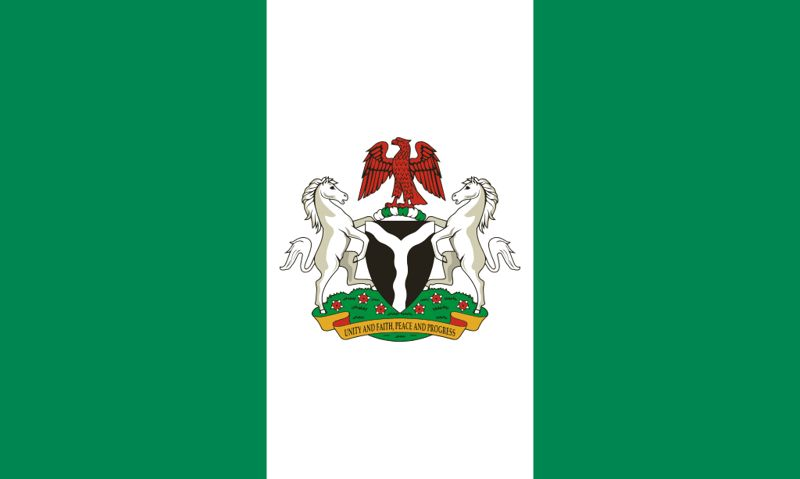

Duabo Bobmanuel
About Me
Hello! My name is Duabo Bobmanuel from Rivers State, Nigeria. I am currently studying Software Development through BYU–Idaho Pathway Worldwide. I enjoy programming, web development, graphic design, and learning new technologies that solve real-world problems. My goal is to become a professional software developer and build useful applications that help individuals and businesses.
Web Dev Resources
My Country

Nigeria is the largest country in Africa by population and is located in West Africa. It is known for its rich culture, diverse ethnic groups, beautiful landscapes, and vibrant economy. I am proud to be from Rivers State and excited to represent my country while studying Software Development at BYU–Idaho.